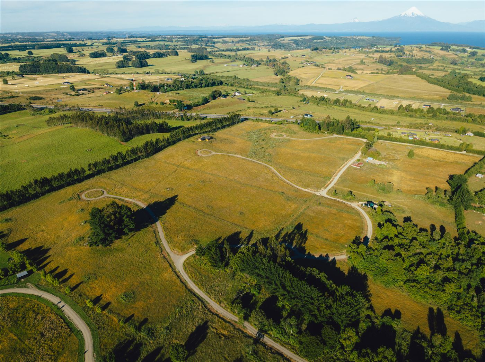

We evaluate land use, zoning, connectivity, and local market dynamics before recommending a purchase. This library brings together our series on rural land near town, the areas we cover, and real client cases—so every decision is made with clarity and confidence.
